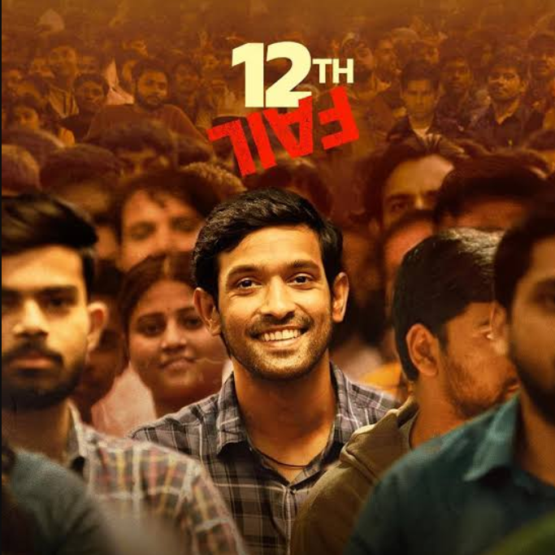
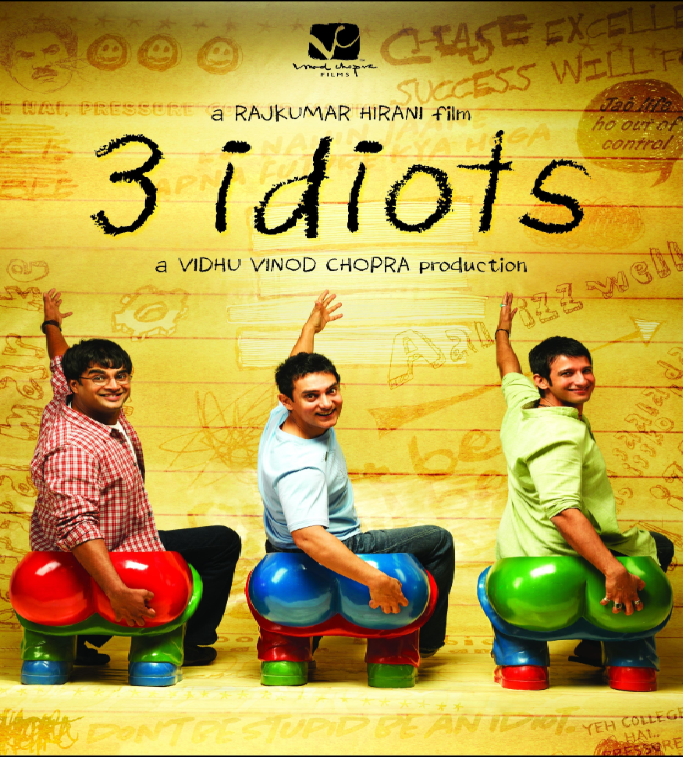
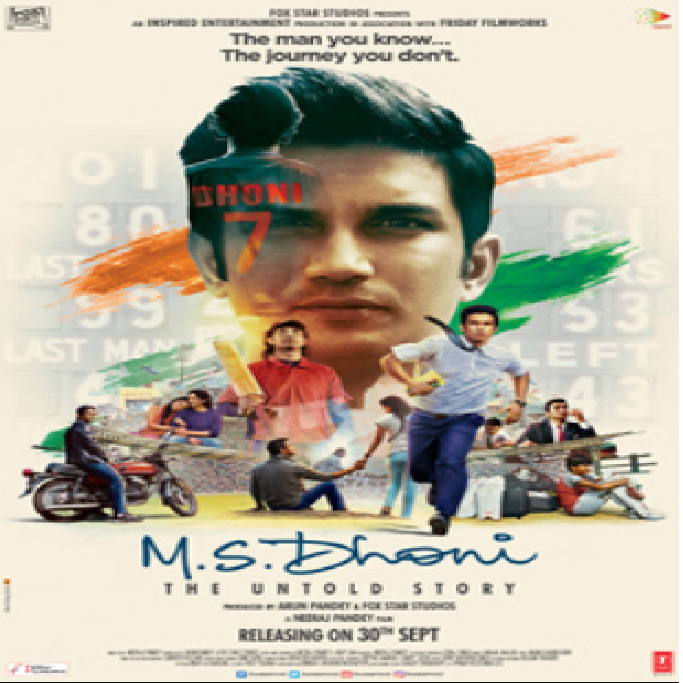

Manoj Kumar Sharma belongs to Chambal village where cheating in exam is a common thing. He is appearing for his 12th standard exams and eyeing a peon's job. But a strict police officer DSP Dushyant Singh arrives during the exams and stops the cheating process, Manoj is unable to pass the examinations and starts to ride a passenger vehicle with brother Kamlesh. Hey both land in trouble with goons of a politician but Dushyant Singh comes to their aid. Inspired by his honesty Manoj starts considering him an idol and wants to become like him. The following year he clears his 12th standard exams and dreams of becoming a DSP officer but his destiny has different plans which brings Manoj into the world of UPSC, one of the toughest exams in the world.

Rancho is an engineering student. His two friends. Farhan and Raju, Rancho sees the world in a different way. Rancho goes somewhere one day. And his friends find him. When Rancho is found, he has become one of a great scientist in the world.

Mahendra Singh Dhoni is a goalkeeper in school football team. Bannerjee a school cricket coach asks him to join his cricket team and practice daily with him for two hours time passes and he becomes a big state-level cricketer, but for a long time luck doesn't favor him to become a member of the Indian Cricket team. Dhoni takes a job in Indian Railways as a ticket-checker and plays cricket for the railways; after four years he gets selected for the Indian Cricket team and turns out to be one of the best cricketing captains in the history of Indian Cricket.